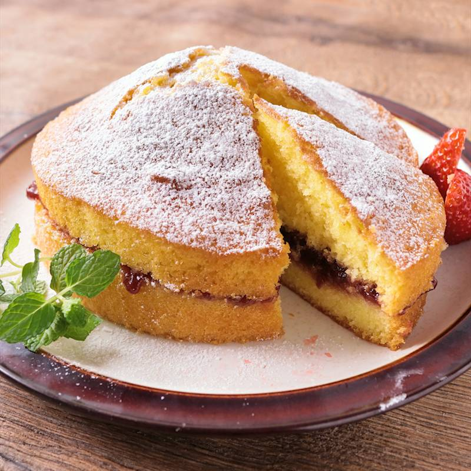
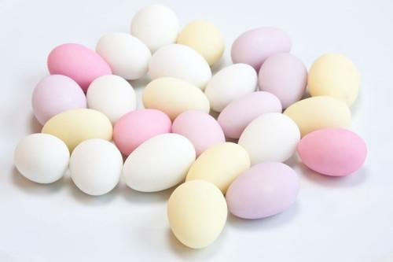
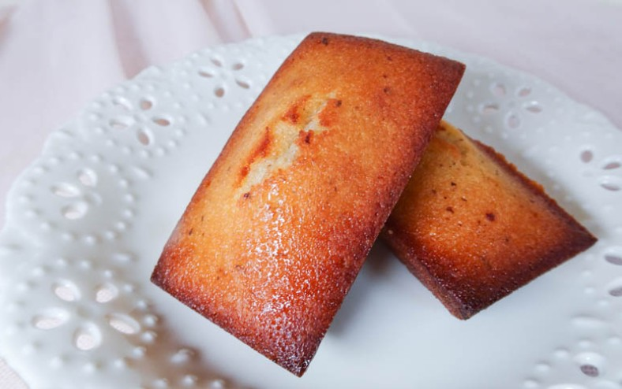

- トップ >
- 紅茶に合うお菓子
紅茶に合うお菓子
紅茶の味わいを引き立てる伝統的なお菓子を紹介します。
ヴィクトリアサンドイッチケーキ

イギリスの伝統的なケーキで、スポンジ生地にジャムとクリームを挟んだお菓子です。 バターのコクと紅茶の渋みがよく合い、特にストレートティーとの相性が抜群です。
ドラジェ

フランスの伝統菓子で、ナッツを砂糖でコーティングした可愛らしいお菓子です。 軽い甘さとカリッとした食感が特徴で、紅茶の香りを邪魔せず上品に楽しめます。 特にフレーバーティーとの相性がよく、華やかなティータイムにぴったりです。
フィナンシェ

フランス発祥の焼き菓子で、バターの香りとしっとりした食感が特徴です。 コクのある甘さが紅茶の味を引き立て、ミルクティーともよく合います。